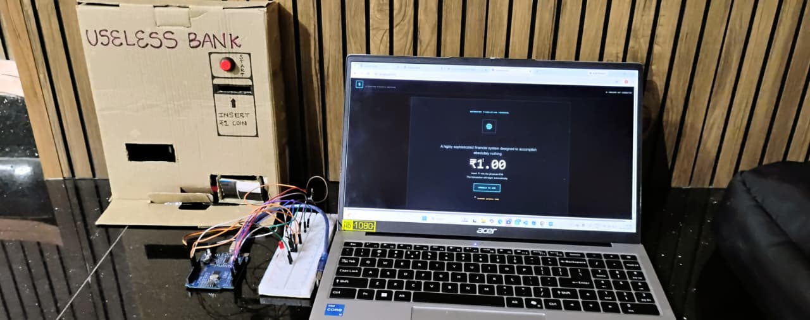

INSERT ₹1
Place one ₹1 coin into the marked entry slot.
A FINANCIAL EXPERIMENT WITH ZERO FINANCIAL BENEFIT
Insert one rupee. The machine detects it, processes it, and gives the exact same rupee back.

Most ATMs are designed around a useful transaction: put something in, get something different out.
Our idea flips that logic. The Useless Bank ATM accepts a ₹1 coin and returns that same ₹1 coin.
RESULT: THE USER ENDS THE TRANSACTION WITH EXACTLY WHAT THEY STARTED WITH.
OUR CURRENT PROTOTYPE — CARDBOARD ATM + ARDUINO + LAPTOP
The prototype uses a handmade cardboard ATM body, a visible coin-entry area, indicator/button elements, an Arduino setup and a laptop connection for the electronics and interface.
Place one ₹1 coin into the marked entry slot.
The sensing system recognises the coin entering the mechanism.
The Arduino handles the programmed response and controls the mechanism.
The mechanism sends the same coin toward the return opening.
The transaction ends with ₹1 returned to the user.
During development, the Arduino is connected to the laptop using USB. The laptop is used for programming/testing, while the Arduino interfaces with the physical components.
Use the video below as the first entry in the build story. Add more photos and short clips here as the project evolves.
Decide on the ₹1 in → ₹1 out concept.
Build the ATM enclosure and mark the coin-entry and return areas.
Connect the Arduino and the physical components.
Run the coin detection and return sequence.
Fix mechanical/electronic issues and repeat the test.
This section is intentionally prepared for the actual problems you encounter while testing the ATM.
Write what happened, what you changed, and whether the next test worked.
Document the wiring, position or code change you made.
Document the mechanical change and the final result.
Click the button. Experience the most unnecessary transaction ever.
READY
₹1.00 NOTHING TO GAIN. NOTHING TO LOSE.TRANSACTION: UB-001
AMOUNT IN: ₹1.00
AMOUNT OUT: ₹1.00
PROFIT: ₹0.00
“The machine does exactly what it was designed to do.”